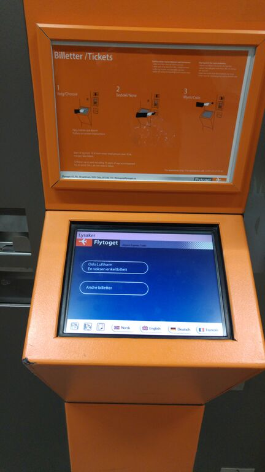
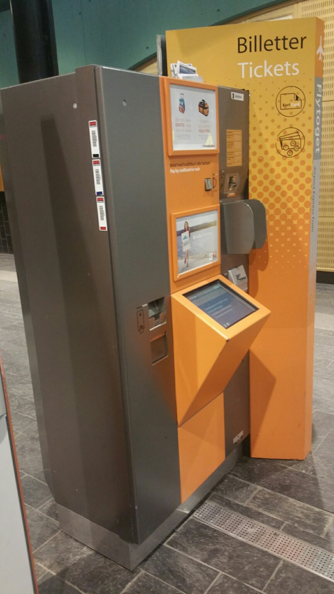
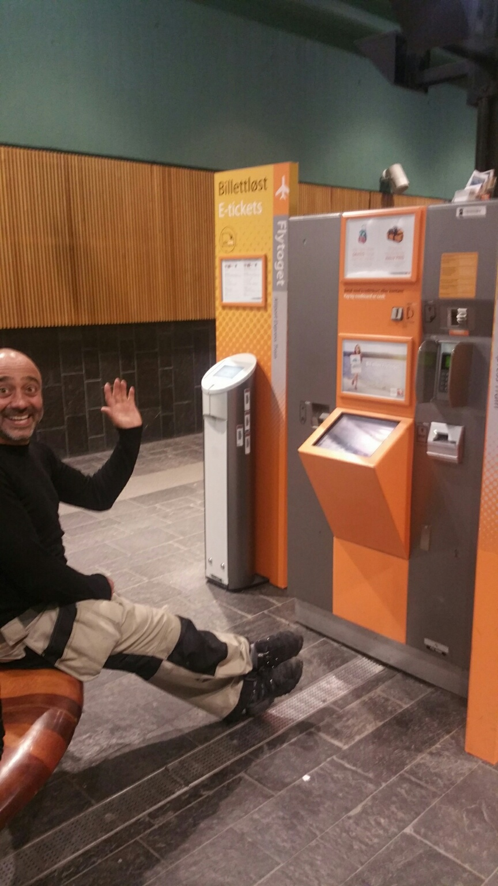

With new technology comes new opportunities, and new challenges.
For a large percentage of the Norwegian population things like ticket vending machines
with a touch screens one of the inventions that can save us time and annoyance.
In our assignment we have tried to figure out who might have trouble using the machines,
and what can be done to make them more user-friendly to everyone.
Part one - Photographing and filming the ticket machine of the airport express train



Part two - How to improve the user's experience
more space between the screen and the bench (picture four)
a little lamp, which makes the area around the screen lighter
embrossed printing
adjustable screen holder
adjust the angle of the screen proportional to the light
install a screen reader
the machine could be a place where it's not so noisy
Part three - Describe the user's enviroment and their barriers
the ticket machine stands in a train station
the area is protected for weather influences
there is just one ticket machine in the train station
there are shops on the left and right sight
Potential barriers
very noisy in the rush hours
very little space between the ticket machine and the bench
screen is low for people over 180cm
the text on and around the screen is hard to read for people with eye problems